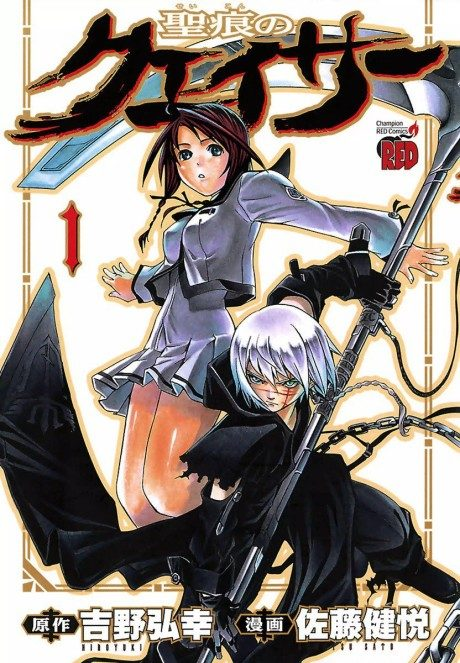

The Qwaser of Stigmata
聖痕のクェイサー
Two sisters take in Sasha, a wounded boy who can control metal, and get pulled into a war over a holy relic.
We haven't found where the anime ends in the manga yet.
5.5AniList score
—Animeter, no votes yet
36episodes, 2 seasons
Rate it or report where you stopped
Anime finished. Where does the manga pick up?
StatusNo source yet
We looked for where the anime ends in the manga but found no source we trust yet. The manga is 119 chapters, finished.